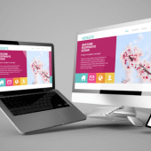
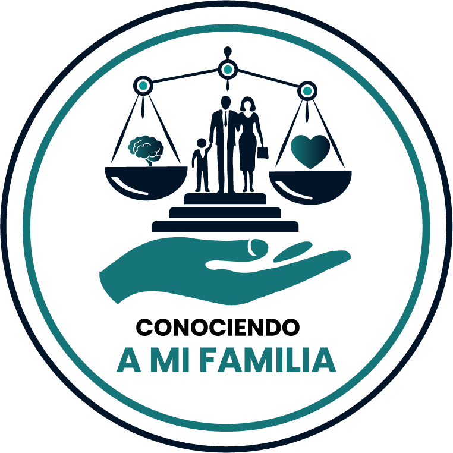

hi there!, i am
david rodriguez
full stack junior developer
about me
you can know who i am and what is my hobbies. i hope it will help you for our friendship.
Junior Fullstack Developer with a solid foundation in the .NET and Angular ecosystems, focused on building scalable and efficient web applications. I possess practical experience with the C#, ASP.NET Core, HTML, CSS, JavaScript, and SQL stack, applying agile development methodologies. My profile is complemented by comprehensive knowledge in Information Technology (IT) and Security, including the administration and support for the installation of CCTV systems. I seek to apply my dual vision (Development and IT Security) to optimize processes and contribute to the development of robust technological solutions that ensure both functionality and data integrity. A committed and constant learner dedicated to continuous improvement
what can I do

my skills
resume
professional experience and academy formation
educational experience
Ministerio de Educacion Publica - Educacion Media
webdesign junior to expert - Udemy
fullstack junior - codeminds
As an IT Engineer, I worked in a demanding international corporate environment (Situation) where my primary task (Task) was to ensure that all end-users had secure and uninterrupted access to their critical work tools and systems. To achieve this, (Action) I implemented a full-cycle support process that involved advanced in-situ diagnosis and repair of user laptops, performing critical preventive maintenance, and strictly managing user access accounts and permissions using Microsoft Azure and Active Directory. All my support requests were meticulously logged and tracked in Service Now, allowing me to handle a high-volume queue efficiently. (Result) These actions resulted in maintaining a consistently low hardware failure rate and my swift support efficiency led to a measurable reduction in downtime for key personnel.
Collaborated in the development of a web application for managing medical clinics, designed to handle doctors, patients, and appointments through complete CRUD operations. Responsibilities and Contributions: •Actively participated in all stages of development, both backend and frontend. •Implemented a complete API with database integration, using DTOs, services, controllers, and middleware. •Designed and built the relational database from scratch to manage doctors and patients information. •Developed key API functions such as updating and deleting patient records. •Contributed to the frontend using Angular, consuming APIs and implementing JWT authentication. •Strengthened skills in programming structure and web application architecture by independently developing code components. Key Achievements: •Successfully built functional modules independently, including complete CRUD features for patients. •Gained hands-on experience in building a full-stack application from the ground up.
Participated in the complete development of corporate websites from scratch using WordPress with the Divi builder, creating customized designs and functional components tailored to each client's needs. Responsibilities and Contributions: •Designed and developed fully functional websites from initial structure to final delivery. •Implemented custom CSS and JavaScript modifications to extend Divi's capabilities. •Built dynamic components (menus, footers, and interactive modules) from scratch. •Applied on-page SEO improvements, optimizing performance, loading speed, and search visibility. •Configured metadata for social media platforms, improving content presentation and reach. Key Achievements: •Developed a complete, fully functional website from the ground up. •Enhanced SEO performance and loading times, improving the technical and visual quality of delivered projects.
portafolio
Rodcast Solutions
Technology
Conociendo A Mi Familia
Mental Health OrganizationServices
Explore our servicesWeb Design
Globall morph 24/365 commerce whereas granular technologies. Completely impact.
IT Support
Globall morph 24/365 commerce whereas granular technologies. Completely impact.
Backend Services
Globall morph 24/365 commerce whereas granular technologies. Completely impact.
PC Maintenance
Globall morph 24/365 commerce whereas granular technologies. Completely impact.
CCTV
Globall morph 24/365 commerce whereas granular technologies. Completely impact.